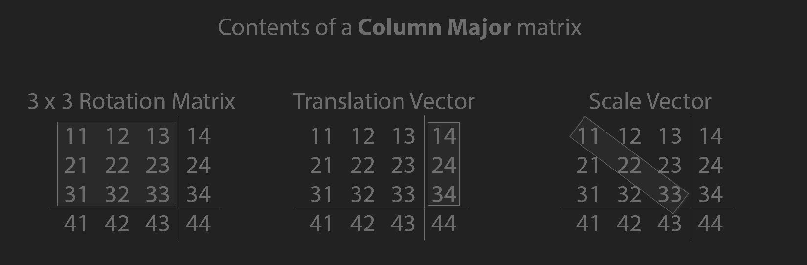

Rotating around an axis
These are just conventions. OpenGL doesn't actually define which way "world forward" points. It simply defines NDC (Normalized Device Coordinate) space. You could have world forward be along the positive z axis, moving "into the monitor", and simply flip the z axis as part of the NDC transform. This will be covered in depth in the projections and 3D pipeline sections of this blog post.
struct mat4 {
};